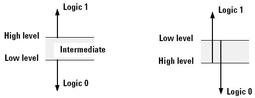

How to set the comparator thresholds for single-ended pins
You can set the comparator thresholds of an o pin or the output part of an io pin.
Before you begin
Make sure that you have opened the Level Setup window.
Procedure
Results
In the Level Setup window, the level [V] low and high columns display the level of the comparator thresholds.
As mentioned earlier four states can be generated by the comparator: logic 0, logic 1, intermediate and unstable. Subsequent the conditions are listed that need to be fulfilled for a specific state:
- logic 1:= (V>Voh) AND (V>Vol)
- logic 0:= (V<Voh) AND (V<Vol)
- Intermediate:= (V>Vol) AND (V<Voh)
- Unstable:= (returned only if at least two of the three states (logic 1, logic 0,
intermediate) occur in a window compare) Note Unlike the driver the comparator does not perform any autocorrection.
Basically, it is also possible to program a low level [V] that violates the minimum high-low threshold difference (100mV) or is even equal to or higher than the high level [V]. In this case a warning message is returned.
If the low level [V] is programmed to higher level than the high level [V] and the voltage at the comparator is higher than the high level [V] and lower than the low level [V] the state unstable will be returned. This is illustrated on the right hand side of the figure below.

To perform a single level compare you can either set low level [V] and high level [V] of your comparator to the same value or use a single level, only.
If both levels are set to the same value all voltages below this threshold will generate a logic 0 state whereas voltages above this threshold will generate a logic 1 state. However, note that due to the threshold accuracy of low and high level a range of uncertainty around the threshold does exist. This range of uncertainty equals twice the threshold accuracy.
If a single level is used and the other level is set to a different value far enough away from the threshold of interest the range of uncertainty halves and equals the threshold accuracy.
However, now the intermediate state substitutes either the logic 0 or the logic 1 state. If the high level is set to the threshold of interest and the low level to its minimum all voltages above this threshold will generate a logic 1 state, whereas all voltages below this threshold will generate an intermediate state. Vice versa, if the low level is set to the threshold of interest and the high level to its maximum all voltages below this threshold will generate a logic 0 state, whereas all voltages above this threshold will generate an intermediate state.
Functional changes
- Introduced before SmarTest 6.3.2